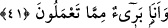

41. Eğer onlar seni yalanladılarsa, de ki: “Benim yaptığım bana, sizin yaptığınız
da size. Siz benim yaptığımdan uzaksınız, ben de sizin yaptığınızdan uzağım!”
“Eğer onlar seni yalanladılarsa,” susturucu bir delil getirdikten sonra hâlâ
yalanlamakta ısrar ettilerse, “de ki: “Benim yaptığım bana, sizin yaptığınız da size.”
Böylece onlardan uzak olduğunu belirt. Çünkü sen gerçekten mâzûrsun. Nitekim “Şayet
sana karşı gelirlerse “Ben sizin yaptıklarınızdan uzağım.” de” (eş-Şuarâ, 26/216)
âyeti de buna delâlet eder. Bu âyetin mânâsı şudur: Hak olsun bâtıl olsun benim
yaptığımın cezâsı bana, sizin yaptığınızın cezâsı da size âittir.
Müşriklerin yaptıkları amellerin çoğul değil de tekil olarak kullanılması, amellerinin
aynı cinsten olması ve Rasûlullah’ın ameli ile tam birbirlerine karşı düşecek lâfızlarla
anlatılması amacıyladır.
“Siz benim yaptığımdan uzaksınız, ben de bizin yaptığınızdan uzağım!” Bu söz, bir
önceki ibârede geçen ‘bir davranışın karşılığının onu yapandan başkasına âit
olmayacağı’ hükmünü pekiştirmektedir. Yani, ne siz benim davranışım yüzünden hesaba
çekilip azarlanacaksınız, ne de ben sizin davranışınız yüzünden hesaba çekilip
azarlanacağım.
Hz. Peygamber (s.a.)’in ameli rubûbiyyet feyzini kabul edebilmek için ubûdiyyetten
istifâde konusunda fıtrî istîdâdını ortaya koymasıdır. Bunun karşılığı da cennet ve
vuslattır.
Müşriklerin ameli ise kalbin ilâhî feyzi kabul etme istîdâdını köreltmek, nefsânî istek
ve arzuları elde etmek için fıtrî istîdadlarını bozmaktan ibârettir. Bu amelin cezası ise
cehennem ve mahrûmiyyettir.
Hz. Peygamber (s.a.) in ameli aynı zamanda tasdik ve ikrâr iken, müşriklerin ameli
tekzib ve inkârdır. Bunlardan her biri dünyada da ahirette de yekdiğerinden uzaktır,
berîdir ve ebediyyen bir araya gelmezler. Çünkü kertenkele ile balık bir araya gelmez.
Kertenkelenin gıdası hava, balığınki ise sudur. Biri -yani kertenkele- kara hayvanı
olduğundan dâima kurudur. Çünkü bu, toprağın tabiatında vardır. Öteki -yani balık- ise
bir deniz havyanı olduğundan daima ıslaktır. Çünkü ıslaklık suyun tabiatında mevcuttur.
Mesnevî’de şöyle denilir:
Has papağanlara pek bol, pek değerli şekerler vardır.
Ama bayağı papağanlar o taraftan göz yummuşlardır.
Görünüşü derviş olan kimse bu ilahî lütfu anlayabilir mi?
Bu bir manevî haldir. Feûlün, fâilat değildir.
İsa’nın eşeğinden şeker esirgenmez,
Ama eşek yaratılış bakımından otu beğenir
Kanat vardır, doğanları padişaha götürür.
Kanat vardır, kuzgunları mezarlığa, leşe uçurur.